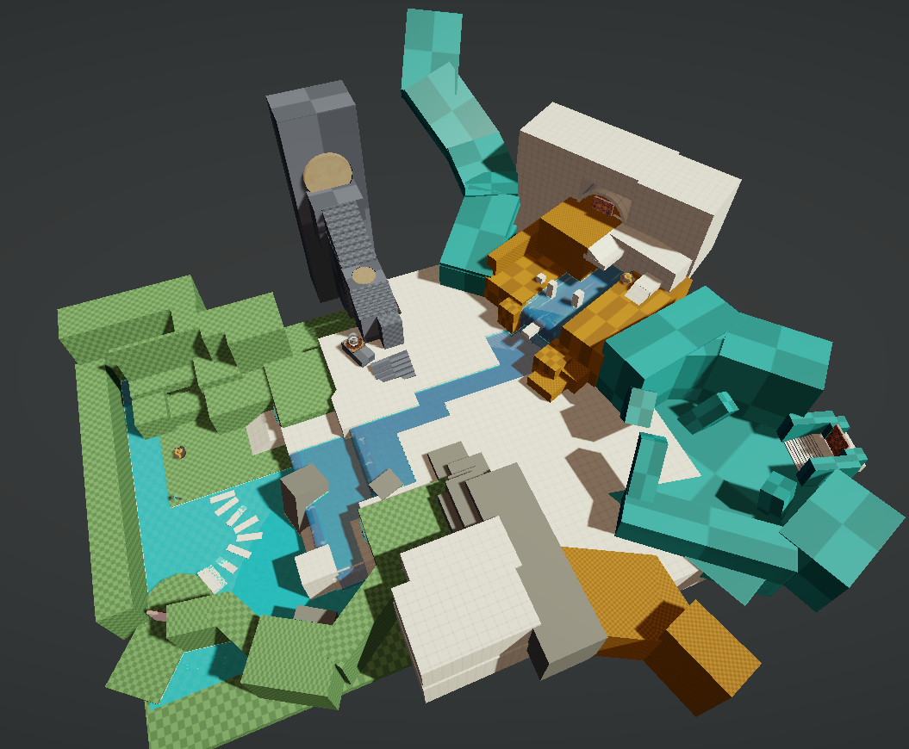
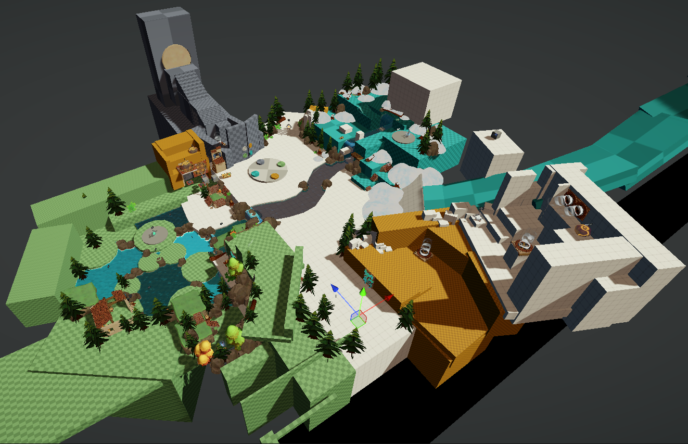
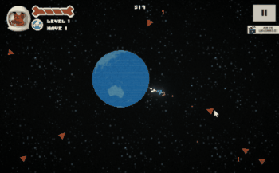
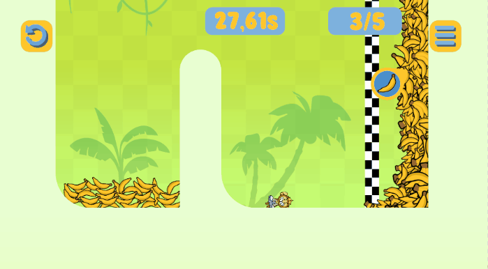

Samuel Cutts
PARA FAUNA INTERNSHIP
Overview
I completed an 18 week internship at Para Fauna
studios, a small indie studio based in Ghent,
Belgium. During my time there, I worked on a
variety of projects, including their flagship
project Adapta Solva, 3 small mobile/web games
for Poki and participated in a Steam Release. I
gained valuable experience in game design,
playtesting, and iteration, and I had the
opportunity to work with an awesome team.
Key Takeaways
As an indie developer, I had to handle a range of
responsibilities. With only 2 artists and 2 programmers,
I often had to stretch beyond pure design work and take on
larger sections of the pipeline. I gained experience in:
Responsibilities
Given the small team size of 4, I had to define my responsibilities more often
than working within a defined project structure.
- Task Creation and estimation
- Pitching and designing new features
- Implementing and polishing each feature
- Keeping the office lighthearted and fun
Adapta Solva
I had the opportunity to work on the flagship project at Para Fauna. My primary responsibilities were to solve two major challenges players were currently experiencing. The first to improve continuity for playsessions. In other words, players didn't yet have a strong sense that the levels they were playing were part of a larger, connected world. The second challenge was communicating to the player their impact on the game world by the action of restoring a corrupted forest through their afforded actions.
My solution to giving players a stronger sense of continuity was to adapt and flesh out a previous idea for a hub world with interconnected tracks leading to and away from the hub. Additionally, I furthered the player's connection to the puzzles by adding traversal sections between each of the main puzzles, to break up the pacing.
Level Design
Hub World
I was inspired by the hub worlds of traditional puzzle platformers and aimed to create a hubworld that focused on tutorialisation, story and exploration with secrets. To this end I took inspiration from games such as Spyro and Super Mario Sunshine. My first blockout of the hub involved forcing the player to perform a simple, low stakes puzzle to unlock each door.

We found after playtesting that the core idea of the hub worked, but the forced puzzles were causing players to view the hub as one large puzzle. So I retrofitted each of the puzzles into optional secret objectives to unlock collectables. As well as improved telegraphing for the player. This is what the final blockout looked like:

We found after testing this iteration with testers that players were motivated to explore the hub world and gather collectables before and after they played through one of the levels. By doing this the game achieve a stronger sense of continuity and kept players more motivated to continue playing for longer.
Platforming sections
In addtion to the Hub world, I added traversal sections with light platforming as a way to flesh out the tracks and break up the pacing. Lastly, the platforming sections act as an important form of tutorialisation.
In one such platforming section, the environment is structured so that the player is forced to engage with the key mechanics related to a specific element, slime, without previously understanding how these mechanics worked.
In the example, the player is shown a bridge of grates. At this point, the player is forced to have the slime element equipped, where if they were to stand on a grate, they would slip through. Thus when the player attempts to walk over the bridge, they will inevitably fall through the grate. However, the distance covered by the grates is easily jumpable. The idea here is to get the player to "accidentally" interact with an important mechanic that they will later exploit to solve puzzles in this level.
Another example is the slope later in this section. The slope is the only path forward, whereby if they move down it, they will be forced into water. Water in this case removes the equipped slime element. Here the environment again teaches the player another dynamic inherent to the slime element.
Restoration Design
One of the challenges that the project needed to overcome was
delivering a sense of restoring the dead forest in which you play
and have that feel as satisfying as possible. To that end I pitched
a system of feedback that would be delivered to the player.
In vague terms, the feedback comes together to turn a section of corrupted, dead forest into a lush, green variation of itself. More specifically, A texture painter paints onto a render target that can be sampled as a mask by several shaders and tweened animations, VFX and post processing. The channels of feedback were specifically:
-
An environment shader that changes ground textures by sampling this mask. In this case, swapping from brown/grey textures to Green.
-
A vertex shader which grows vegetation within the painted area of the environment.
-
VFX of glowing green fireflies that burst out from the painted area.
-
A post process volume with desaturation, lowered contrast and a black vignette, which has its weight reduced to 0 when the puzzle is solves and the forest is finally restored.
The system paints to a render target, which I then sample. I paint different values into each channel to different effects. The red channel is used for the texture painted materials, like the ground and walls. The blue channel is used for the vertex shaders and defines where the vegetation is grown and where it is hidden. The green channel is used for overgrowth, in this case I cause the vegetation to gain some additional height in any section already defined as grown by the blue channel. I paint a ring into the green channel which dissipates over time. This adds some more life to the effect and sells the aesthetics of restoring the forest better.
Here you can see the different iterations of the feature, from the intial test to the final implementation. I overcame several challenges implementing this system and learned valuable skills in: writing HLSL shaders for the texure painter,
Poki games
While with Para Fauna, I worked on 3 different projects for the web gaming platform Poki games. The key takeaways I had from working on these projects was how to structure a game for web platforms and how to focus on rapid development over long term planning. I specifically took away how games need to simplified, with a focus on easy telegraphing and onboarding for the player.
Laika Space Defense
The first project I worked on while with Para Fauna. I improved game feel for the upgrade system, level up and experience gaining moments by adding animations, making a slot machine interface for picking an upgrade and adding particles for gaining experience.

Steam Release
I was fortunate to participate in the game's launch on Steam. The game achieved a postive rating. I am incredibly grateful to have been part of the team who worked on this game and contributed to its release.
Monkey Swing
The second project I worked on was a 2d platformer focusing on speedrunning through simple exotic levels. My contributions to the project were its initial pitch, designing and implementing the levels, creating and adding game feel to the level transitions and all environmental mechanics.

Coin Pusher Slayer
The final Poki I worked on while with Para Fauna was an idle incremental game. For this game we wanted to focus on the most positive design elements that the Poki market was responding to in our previous projects. The elements we identified were ease of onboarding and a rapid and immediate sense of progression.
I was responsible for creating and polishing the clicker, coins, coinpusher and incremental mechanics, including designing the upgrades. I also contributed to the UI implementation.
End Game

Game Jams
In the second half of the internship we took 3 days off of working on our main projects to participate in the 15th Planet Jam on itch.io. I created the virtual streamchat, donations and viewer count controller. The whole experience was a lot of fun and I'm grateful to my teammates for such a fluid and easy jamming process.